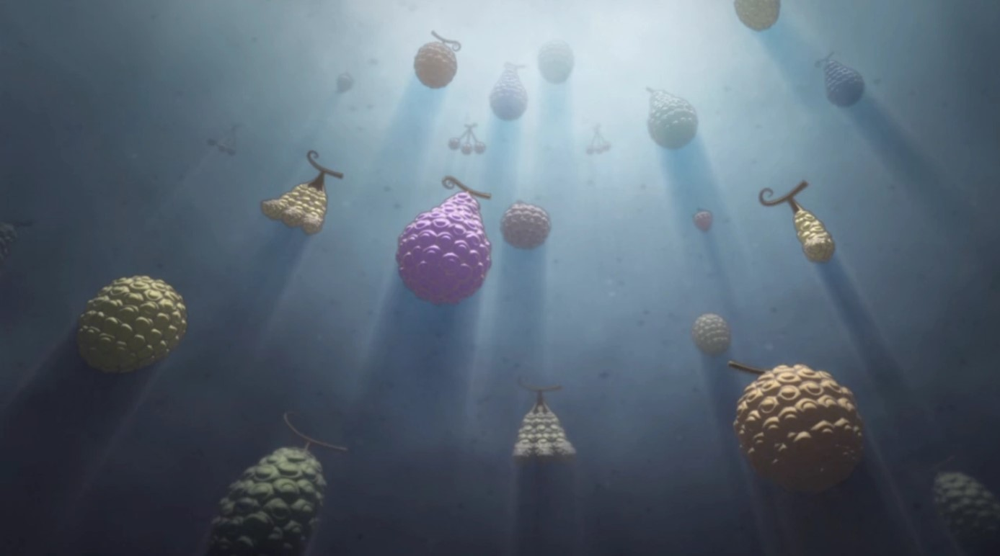
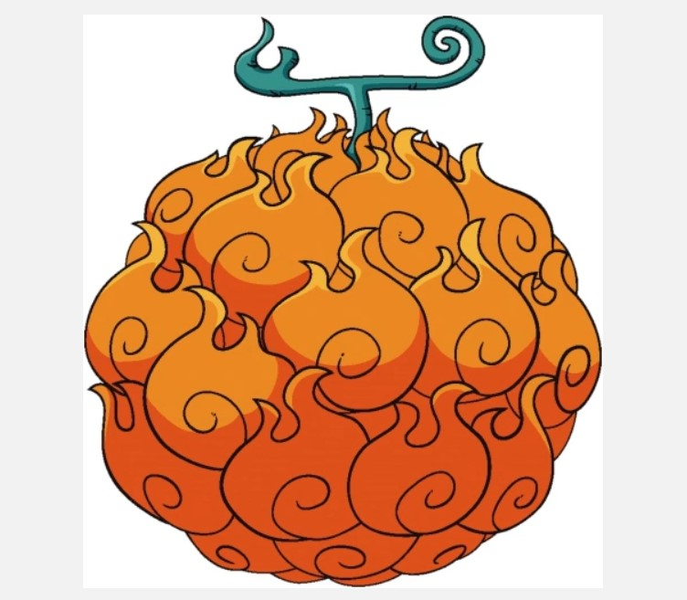
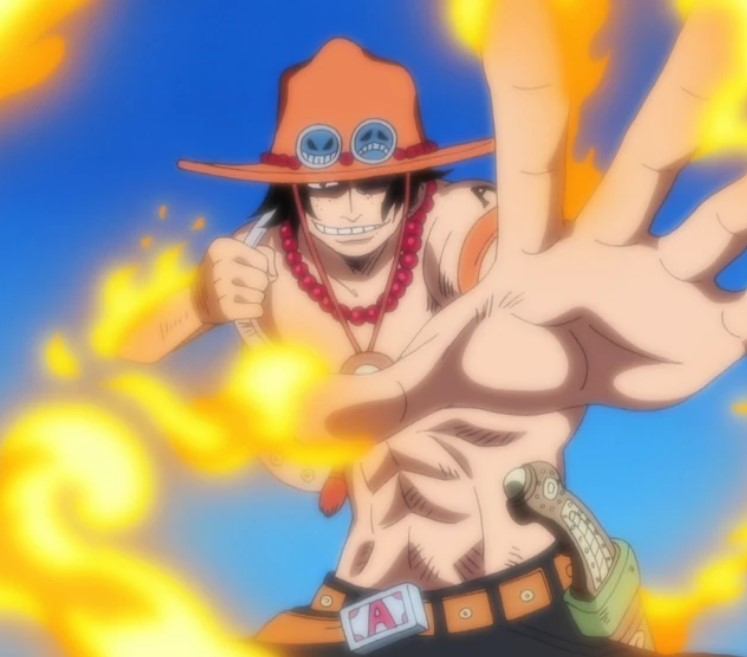

Devil Fruits

Devil Fruits are mysterious, magical fruits in the world of One Piece that grant their consumers extraordinary supernatural abilities.
They come in three main types: Paramecia (granting various superhuman powers), Zoan (allowing transformation into animals or mythical creatures), and Logia (enabling the user to become and control a natural element). While these fruits bestow incredible powers, they come with a significant drawback - the user loses the ability to swim and becomes weakened when submerged in water. Each Devil Fruit is unique, with no two fruits having the same power, and a person can only consume one in their lifetime.
Appearance

Devil Fruits in One Piece have a distinct appearance that sets them apart from normal fruits. They come in various colors, shapes, and sizes, but all feature unique swirling patterns on their surface
These patterns are a key identifier, with natural Devil Fruits having intricate swirls, while artificial ones display simpler circular patterns9. Despite their diverse appearances, Devil Fruits are universally known for their notoriously awful taste
Features & Abilities

Devil Fruits in One Piece are magical fruits that grant their eaters extraordinary supernatural abilities. These abilities fall into three main categories: Paramecia (granting various superhuman powers), Zoan (allowing transformation into animals or mythical creatures), and Logia (enabling the user to become and control a natural element).
However, consuming a Devil Fruit comes with a significant drawback... the user loses the ability to swim and becomes weakened when submerged in water. It's important to note that a person can only consume one Devil Fruit, as attempting to eat a second would result in death.